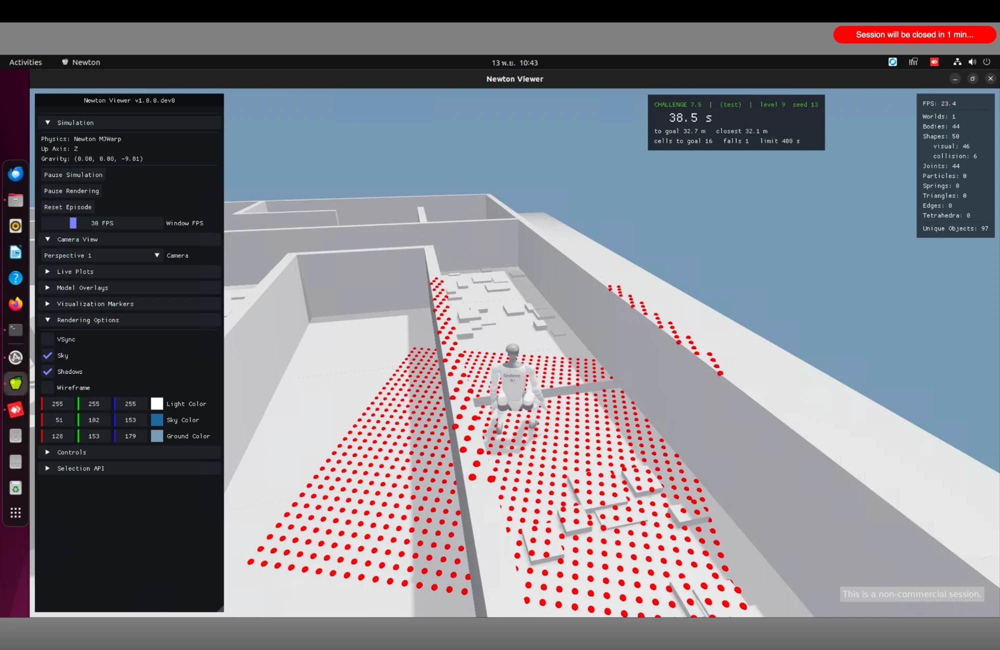

Dead end
closed on 3 sides — never entered
Height scan (red dots)
reaches over the wall
G1 walking here
What the map stores
Dead end
G1
red = wall seen by scan
left corridor is known to be closed
Walking one corridor maps the walls of the next one too.
After a fall and reset, the planner already knows that corridor is a dead end and skips it.